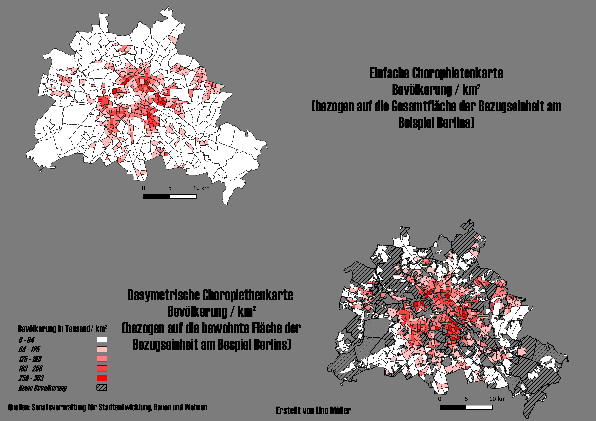

DTM Karten Projekte
Entdecken Sie verschiedene Kartenstile und erfahren Sie, wie jede einzelne mit QGIS erstellt wurde.

EP.01 Dasymetrische Choroplethenkarte
EP.02 Gitterchoroplethenkarte
EP.03 Punktrasterkarten
EP.04 Value-by-Alpha
EP.05 Tile-Maps
EP.06 Flowmap
EP.07 | Mesh-Daten
EP.08 Animationen in QGIS
EP.09 2.5D-Gebäudemodelle